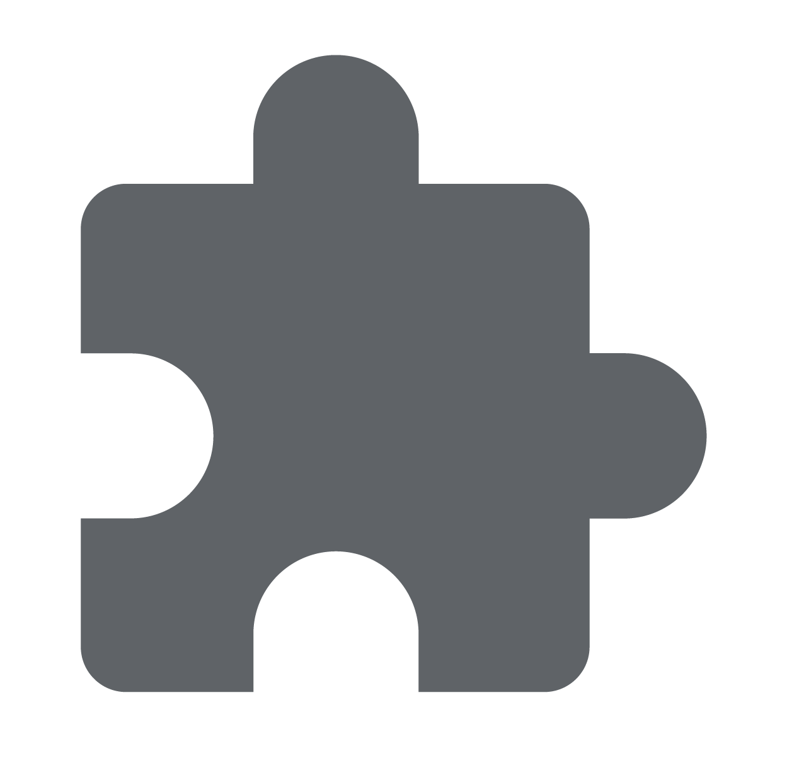
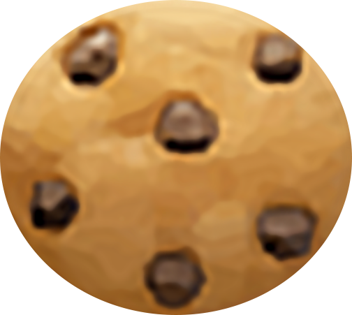

How to pin the Cooooookies to your toolbar:
Cooooookies works best when it is pinned to your toolbar, so you can see a real time cookie score as you browse!
Click this icon in the top right of your Chrome browser in order to pin Cooooookies:

This lets Cooooookies live in your toolbar and displays a counter of your Cookie Score in real time! You can also click this icon in order to view the leaderboard.
